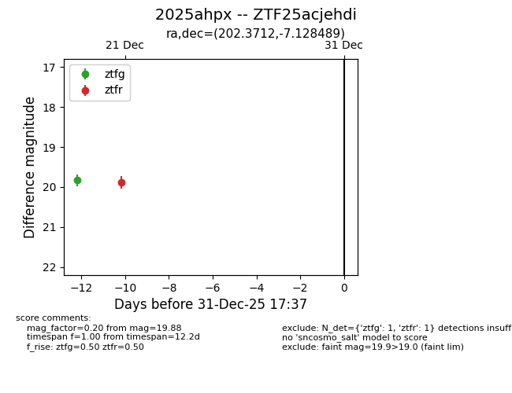
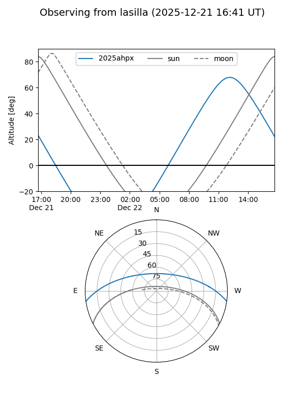
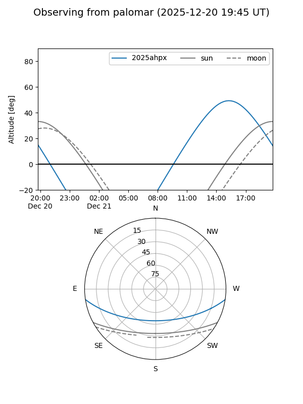

2025ahpx
Target 2025ahpx at 2025-12-20 00:02
Aliases and brokers:
FINK: fink-portal.org/ZTF25acjehdi
Lasair: lasair-ztf.lsst.ac.uk/objects/ZTF25acjehdi
ALeRCE: alerce.online/object/ZTF25acjehdi
TNS: wis-tns.org/object/2025ahpx
YSE: ziggy.ucolick.org/yse/transient_detail/2025ahpx
alt names
ZTF25acjehdi (ztf,fink_ztf)
2025ahpx (tns,yse)
Coordinates:
equatorial (ra, dec) = 202.3712,-7.12849
equatorial (HMS+DMS) = 13:29:29.08,-07:07:42.56
galactic (l, b) = (319.3443,+54.52635)
Flags:
Photometry:
last ztfg=19.83
1 ztfg detections
Lightcurve

Visibility


Additional plots